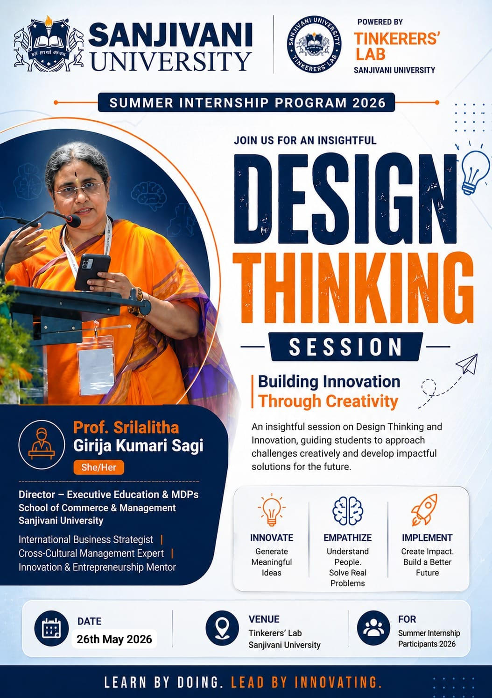

A curious mind with a genuine passion for building things that actually work — from hardware circuits to software interfaces.
About Me
I am a first-year Mechatronics Engineering student currently completing a Summer Internship at Tinkerers' Lab, Sanjivani University. My interest lies at the intersection of electronics, programming, and physical systems — where code meets the real world.
I enjoy working on hands-on projects and believe the best way to learn is by building. Whether it is a radar system on Arduino or a 3D model in Fusion 360, I approach every challenge with curiosity and a willingness to figure things out from scratch.
Skills
CommunicationBasics of ProgrammingArduino & HardwareProblem SolvingTeamwork3D ModellingVersion Control (Git)
Projects
1. Radar System using Arduino — Built a functional radar display using an HC-SR04 ultrasonic sensor mounted on a servo motor, with real-time visualization rendered in Processing IDE. The system sweeps 180° and detects nearby objects, displaying their distance and angle on screen.
2. Obstacle Avoiding Robot with Voice Control — Designed and assembled a robot that autonomously detects and avoids obstacles using ultrasonic sensors, while also accepting voice commands for directional control. Combined embedded programming with basic speech recognition to create a hands-free control experience.
Internship Log
Week 1 — Day 1 · GitHub & VS Code
On the first day of my internship at Tinkerers' Lab, I was introduced to two foundational tools that every developer uses: GitHub for version control and VS Code as a code editor. I set up my development environment from scratch — installed VS Code, configured my GitHub account, created my first repository, and successfully pushed it to GitHub directly from the terminal inside VS Code.
What is GitHub?
GitHub is a web-based platform for version control and collaborative software development, built on top of Git. Think of it like Google Drive for developers — a place to store your code online, track every change you make, and collaborate with others without overwriting each other's work.
For internship and portfolio purposes, GitHub also serves as a public showcase of your work — recruiters and mentors can see exactly what you have built.
To get started, navigate to your GitHub profile and click the "New" button to create a repository. Give it a meaningful name and a short description of what it contains.
Always enable the "Initialize this repository with a README" option before creating the repo. A README file is the front page of your project — it explains what the project does, how to set it up, and any other details a visitor needs.
Create a new folder on your local machine to hold your project files. Open VS Code and use File → Open Folder to load that folder into the editor. Then open the integrated terminal via the three-dot menu → Terminal → New Terminal.
With the terminal open, you are ready to connect your local folder to GitHub and push your files. The six commands below walk you through the entire process.
// click on any command to learn more
01git initInitializes a new Git repository▼
This command creates a hidden .git folder inside your project folder. That folder is what makes it a Git repository — it stores the entire history of your project. You only run this once at the very beginning of a new project.
02git add .Stages all files for commit▼
The dot ( . ) means "add everything in this folder." This command moves your files into the staging area — a holding space where Git prepares them for the next save.
03git commit -m "first commit"Saves a snapshot of your files▼
This saves your staged files as a permanent snapshot in your Git history. The -m flag lets you attach a short message describing what you changed. Every commit is like a save point in a game.
04git branch -M mainRenames the branch to main▼
By default, older versions of Git create a branch called "master." GitHub now uses "main" as the standard default branch name. This command renames your branch to match.
05git remote add origin <URL>Links your local repo to GitHub▼
This connects your local project folder to your online GitHub repository. Replace <URL> with the actual HTTPS or SSH link from your GitHub repository page.
06git push -u origin mainUploads your code to GitHub▼
This uploads all your committed files to GitHub for the first time. The -u flag sets "origin main" as the default tracking branch — so from this point forward, you can just type git push.
Once your code is on GitHub, you can publish it as a live website for free using GitHub Pages. Open your repository, click on Settings, then scroll down and select Pages from the left sidebar.
Once GitHub Pages is enabled, a URL in the format username.github.io/repository-name will appear. Every time you push updated code to the main branch, GitHub automatically rebuilds and redeploys the site.
Week 1 — Day 2 · Inkscape & Fusion 360
On the second day, we were introduced to two powerful design tools: Inkscape for vector graphics and Autodesk Fusion 360 for 3D CAD modelling.
Inkscape — Vector Graphics Editor
Inkscape is a free and open-source vector graphics editor used for creating scalable SVG files. It provides tools for designing logos, labels, enclosures, diagrams, and illustrations.
Why Inkscape in an Engineering Internship?
In a product development environment like Tinkerers' Lab, Inkscape exports SVG and DXF files that are directly compatible with laser cutters and CNC machines. This means a design you create in Inkscape can be sent straight to the laser cutter and physically cut from acrylic, wood, or cardboard.
Types of Images
1) Raster Images — Composed of a fixed grid of pixels. When you zoom in or scale up a raster image, the pixels become visible and the image appears blurry. Common formats include JPEG, PNG, and GIF.
2) Vector Images — Defined by mathematical equations that describe shapes, lines, and curves. They can be scaled to any size without quality loss. Common formats include SVG, AI, and EPS.
🖼 Images
Raster Image Made of pixels
Gets blurry when zoomed
Formats: .jpg .png .gif
Photos & screenshots
Vector Image Made of math equations
Stays sharp at any size
Formats: .svg .ai .eps
Logos, icons & diagrams
How to Install Inkscape
Open Google Chrome and search for Inkscape for Windows. Click on the official download link from the results.
Click the download icon on the Inkscape website to start the download. Wait for the installer to finish downloading.
Run the installer, click Next through the setup wizard, then click Install. Inkscape is now ready to use.
Autodesk Fusion 360 — Parametric CAD Software
Autodesk Fusion 360 is a professional-grade CAD tool used for creating precise 3D models, assemblies, and technical drawings. In Tinkerers' Lab, Fusion 360 is the primary tool used before sending any part to the 3D printer or laser cutter.
🖥 CAD Software
2D CAD Flat drawings
Technical drawings & blueprints
Formats: .dwg .dxf .svg
Floor plans, circuit diagrams
3D CAD 3D models
Solid & surface modelling
Formats: .stl .step .f3d
Product design, 3D printing
Week 1 — Day 3 · Fusion 360 Hands-On
Day 3 was dedicated entirely to hands-on practice with Autodesk Fusion 360. By the end of the session, I had completed my first proper 3D model.
// Fusion 360 — designing a mug from scratch
Designing a Mug in Fusion 360
The task for today was to design a mug from scratch. The process started with a 2D sketch on the canvas, then the Revolve tool was used to spin that profile 360° around a central axis — instantly generating the hollow cylindrical body of the mug.
The trickiest part was adding the handle. It required a separate sketch on a vertical plane and then using the Extrude tool to give it thickness. Seeing a flat sketch transform into a realistic 3D object made the whole session click.
Week 1 — Day 4 · Logo Design in Inkscape
On Day 4, we returned to Inkscape with a more focused objective — designing an actual logo from scratch.
How I Designed the Logo
I began by opening Inkscape and setting up a 500 × 500 px canvas. I used the Circle tool with a gradient fill, then added centered text using the Text tool and Inkscape's alignment tools. The final step was exporting the design as an SVG file.
// Logo design process in Inkscape
Custom Logo Design: A custom logo created using Inkscape. This project helped me develop skills in vector graphics, typography, and professional logo design.
Week 2 — Day 1 · 3D Printers at Tinkerers' Lab
Tinkerers' Lab is equipped with the latest Bambu Lab 3D printer lineup — the A1, A1 Mini, P1S, and H2D. Each model is designed for a different use case.
Filament Types
PLA (Polylactic Acid) — The most beginner-friendly filament. Ideal for prototypes, models, and display parts.
ABS (Acrylonitrile Butadiene Styrene) — Stronger and more heat-resistant than PLA. Used for functional parts that need to survive real-world conditions.
PETG (Polyethylene Terephthalate Glycol) — Combines good strength with slight flexibility. A reliable choice for durable parts.
TPU (Thermoplastic Polyurethane) — A flexible, rubber-like filament used for grips, gaskets, and protective covers.
🧵 Filament Types
PLA Polylactic Acid
Easy to print, biodegradable
Low temperature required
Prototypes & display parts
ABS Acrylonitrile Butadiene Styrene
Strong & heat resistant
High temperature, needs enclosure
Mechanical & functional parts
Bambu Lab A1 Mini
The A1 Mini is Bambu Lab's compact desktop 3D printer, offering a print speed of up to 500 mm/s and a build volume of 180 × 180 × 180 mm. Its magnetic PEI build plate means finished prints pop off with a simple flex.
// Bambu Lab A1 Mini printing in real time
Key Specs
Build Volume: 180 × 180 × 180 mm³ · Hot End Max Temp: 300°C · Print Speed: 500 mm/s · Acceleration: 10,000 mm/s² · Max Bed Temp: 80°C · Supported Filaments: PLA, PETG, TPU, PVA, ABS, ASA, PC
// Click on any part to explore
👆 Click any glowing dot on the printer to explore its parts
Bambu Lab H2D
The H2D is Bambu Lab's flagship industrial-grade 3D printer. Its standout feature is the dual nozzle system, enabling multi-color prints and soluble support structures. With a build volume of 350 × 320 × 325 mm and AI-powered quality monitoring, the H2D represents the cutting edge of desktop additive manufacturing.
// Bambu Lab H2D — dual nozzle system in action
Key Specs
Build Volume: 350 × 320 × 325 mm³ · Dual nozzle, Max Hotend Temp: 350°C · Print Speed: 1000 mm/s · Heated Chamber: up to 65°C · Optional 10W or 40W laser module
Week 2 — Day 2 · Phone Stand Design in Fusion 360
I tried creating a phone stand with my name using Autodesk Fusion 360 and 3D printing it on the H2D.
// Designing a personalised phone stand in Fusion 360
This is how it turned out after printing.
Week 2 — Day 3 · Design Thinking Session
We had an incredibly insightful session on Design Thinking at Tinkerers' Lab, conducted by Prof. Srilalitha Girija Kumari Sagi, Director of Executive Education & MDPs at Sanjivani University. The session focused on Building Innovation Through Creativity — teaching us how to approach real-world problems not just as engineers, but as empathetic problem-solvers who think about the people they are designing for.

About the Session
The session was part of the Summer Internship Program 2026 powered by Tinkerers' Lab, Sanjivani University, held on 26th May 2026.
Mentor:Dr. Kiran Wakchaure — our internship mentor who guided us throughout the program and organized this session for the Summer Internship participants.
Speaker: Prof. Srilalitha Girija Kumari Sagi — International Business Strategist, Cross-Cultural Management Expert, and Innovation & Entrepreneurship Mentor with extensive experience guiding students and professionals across industries.
The session was built around three core pillars:
💡 Innovate — Move beyond obvious solutions. Generate meaningful ideas by questioning assumptions and looking at problems from fresh angles.
🧠 Empathize — Understand the real needs of the people you are designing for. The best engineering solutions come from truly listening to users, not just solving what seems obvious on the surface.
🚀 Implement — Ideas only create impact when they are built and tested. The session emphasized that action and iteration matter more than perfection.
What is Design Thinking?
Design Thinking is a human-centered approach to innovation and problem solving. Unlike traditional engineering approaches that start from a technical solution, Design Thinking starts from the user's perspective — their pain points, behaviors, and needs — and works backward toward a solution.
The five stages of Design Thinking are: Empathize → Define → Ideate → Prototype → Test. This is not a linear process — you can loop back at any stage based on what you learn from testing.
Key Takeaways from the Session
Prof. Sagi emphasized that as engineering students, we often rush straight to building — but the most important step is understanding who you are building for and why. A technically perfect product that does not solve a real problem has no value.
We were also introduced to the concept of rapid prototyping — the idea that building a rough, quick version of your idea and testing it with real users is far more valuable than spending weeks perfecting something in theory. Fail fast, learn fast, improve fast.
One particularly memorable point was about creative confidence — Prof. Sagi encouraged every student to believe that creativity is not a talent you are born with, but a skill you develop through practice, observation, and a willingness to be wrong.
During the session, students were grouped and given a real-world challenge to work through using the Design Thinking framework. We had to empathize with a user group, define their core problem, brainstorm ideas, and present a rough solution — all within a single session. It was fast-paced, creative, and a completely different experience from regular classroom learning.
My Reflection
This session genuinely changed how I think about building things. Before, I would jump straight into designing a circuit or writing code whenever I had an idea. After this session, I understand that the most important questions to ask first are — Who is this for? What problem does it actually solve? Have I spoken to anyone who has that problem?
I also realized that Design Thinking is directly applicable to the hardware and embedded systems work we do in Mechatronics. When designing a robot or an IoT device, the physical interface, the user experience, and the real-world context matter just as much as the technical implementation.
Week 2 — Day 4 · Laser Cutting
For laser cutting we used a software called LaserCAD. LaserCAD is an integrated CAD/CAM and machine-control application that streamlines laser cutting and engraving from design to finished parts. It is developed by Wei-Hsin Computer-Tech Ltd. and is ideal for makers, schools, fab labs, and small manufacturers seeking to reduce setup time, minimize material waste, and achieve repeatable, high-quality cuts and engravings.
How Does Laser Cutting Work?
// CO2 laser cutter in operation
CO2 Laser Cutter
A CO2 laser cutter is a machine that uses a beam of infrared light — generated by a CO2 gas-filled tube — to cut, engrave, or etch materials with high precision.
How it works (simplified): Electricity excites CO2 gas and produces a laser beam at a wavelength of 10.6 μm. Mirrors guide the beam to a focusing lens, which concentrates it to a tiny point on the material. The intense heat vaporizes or melts the material along the cutting path.
Operations It Performs
Cutting — Full depth cut through the material (slow speed, high power).
Engraving — Surface-level marking and etching (fast speed, low power).
High voltage electricity excites a mix of CO2, nitrogen, and helium gas inside the tube, causing CO2 molecules to release infrared light. This beam bounces between two mirrors to amplify it, then exits through a partially reflective mirror toward the cutting head.
The machine has an aluminum frame with a honeycomb work bed at the bottom. A large glass CO2 laser tube runs horizontally across the top. The beam travels from the tube through three mirrors before being focused by a lens in the cutting nozzle onto the material below.
Chiller
A chiller is a water cooling device that continuously circulates cold water through the CO2 laser tube to absorb and remove the heat generated during lasing. Without it, the tube overheats and cracks within minutes. Most laser cutters use a CW-3000 or CW-5000 series industrial chiller, maintaining water temperature around 20–25°C for safe operation.
Compressor
A compressor supplies pressurized air through a pipe to the laser cutting head. This air is blown directly onto the cutting point to blow away smoke and debris, cool the material, protect the focus lens, and improve cut quality with cleaner, sharper edges. Most laser cutters use a compressor set to around 0.2–0.5 MPa depending on the material being cut.
Week 2 — Day 5 · Arduino IDE & Microcontrollers
On this day we were introduced to Arduino IDE. As I had previously worked on IoT projects, I was familiar with the basics and started working on simple sketches such as blinking an LED and controlling it with a phone.
First we installed Arduino IDE.
// Installing Arduino IDE step by step
What is Arduino IDE?
Arduino IDE is the software where you write and upload code to your Arduino board. You type your instructions, hit Upload, and the board starts executing them — whether it is rotating a servo, reading a sensor, or blinking an LED.
Before this internship, I built two Arduino projects — a Radar System and a Voice-Controlled Obstacle Avoiding Robot. Both gave me a solid base in hardware and coding before joining the lab.
What is a Microcontroller?
A microcontroller is a small chip that can read inputs, process them, and control outputs — all on its own. Think of it as a tiny computer on a single chip. In the lab, we were introduced to different types: Arduino UNO, Arduino Nano, Arduino Mega, ESP32, and Raspberry Pi Pico.
// LED blinking on Arduino — changing delay to vary speed
We tried changing the delay in the sketch to notice the difference in blinking speed.
Arduino Uno
The Arduino Uno is a popular microcontroller board based on the ATmega328P. It has 14 digital I/O pins, 6 analog inputs, a 16 MHz crystal oscillator, a USB connection, a power jack, an ICSP header, and a reset button.
Microcontroller
ATmega328P
Operating Voltage
5V
Clock Speed
16 MHz
Flash Memory
32 KB
SRAM
2 KB
EEPROM
1 KB
Digital I/O Pins
14 (6 PWM)
Analog Inputs
6
Wireless
None
USB
Type-B
ESP32
This was my first time using ESP32. The ESP32 is a microcontroller that has built-in WiFi and Bluetooth capabilities.
Microcontroller
Xtensa dual-core LX6
Operating Voltage
3.3V
Clock Speed
up to 240 MHz
Flash Memory
4 MB
SRAM
520 KB
Digital I/O Pins
34
Analog Inputs
18 (12-bit ADC)
WiFi
802.11 b/g/n
Bluetooth
v4.2 + BLE
USB
Micro USB
The ESP32 integrates Wi-Fi and Bluetooth, enabling wireless communication between devices. It provides multiple GPIO pins for interfacing with sensors and actuators. It can be programmed using the Arduino IDE, making it accessible for both beginners and advanced developers.
Week 2 — Day 6 · Wokwi & ESP32 LED Blinking
On Day 6 we explored Wokwi — an online simulator for Arduino and ESP32 projects. Wokwi lets you build and test circuits entirely in the browser without any physical hardware, making it ideal for learning and prototyping.
We simulated the ESP32 LED blinking sketch directly in Wokwi, adjusting the delay and observing the effect in real time inside the simulator.
Week 3 — Day 1 · Microcontrollers, Actuators & Sensors
What is a Microcontroller? A microcontroller is a small computer on a single chip that contains a processor, memory, and input/output peripherals — all built together.
What is a Microprocessor? A microprocessor is a central processing unit (CPU) that performs arithmetic, logic, control, and input/output operations but relies on external components for memory and I/O.
Difference Between Microcontroller and Microprocessor
// Servo motor sweeping 0° to 180° using the sketch above
Tried making a radar using Arduino and ultrasonic sensor with servo motor.
Sensors
Ultrasonic Sensor (HC-SR04) — Measures distance by emitting an ultrasonic pulse and timing how long it takes to bounce back. Commonly used in obstacle detection and radar projects.
Electronics
Basic electronic components used in the lab include resistors, LEDs, capacitors, breadboards, and jumper wires — the building blocks of every circuit we assembled during the internship.
Conclusion · What This Internship Taught Me
Three weeks at Tinkerers' Lab was one of the most hands-on and eye-opening learning experiences I have had as an engineering student. Before this internship, I had only worked on individual hobby projects at home. Here, I was surrounded by professional-grade tools, experienced mentors, and a lab culture that genuinely encouraged curiosity and experimentation.
Technical Skills Gained
I came in knowing the basics of Arduino and programming, but left with a much broader toolkit. I learned how to use Git and GitHub for version control — a skill that every developer needs but very few diploma students learn in first year. I got hands-on time with Inkscape for vector design and Autodesk Fusion 360 for 3D parametric modelling, both of which I had never used before.
Working with the Bambu Lab A1 Mini and H2D 3D printers gave me a real understanding of additive manufacturing — from choosing the right filament to understanding why print speed and bed temperature matter. The laser cutting session introduced me to subtractive manufacturing and showed me how a digital design in LaserCAD becomes a physical cut piece within minutes.
On the electronics side, spending time with the ESP32 and exploring Wokwi for simulation opened up a whole new world of wireless embedded systems beyond the standard Arduino UNO I had worked with before.
Beyond the Technical
The Design Thinking session with Prof. Srilalitha Girija Kumari Sagi was a turning point in how I think about engineering problems. It taught me that the best solution is not always the most technically impressive one — it is the one that actually solves the right problem for the right person. That mindset shift will stay with me through the rest of my engineering education and career.
I also learned the value of documentation. Building this portfolio — writing about each day, capturing screenshots and videos, explaining concepts in my own words — forced me to deeply understand everything I was doing rather than just going through the motions.
What's Next
I plan to continue building on everything I learned here. My immediate next steps are to complete a more advanced Arduino project combining the servo motor, ultrasonic sensor, and ESP32 Wi-Fi capabilities into a single system. I also want to design a complete enclosure for it in Fusion 360 and have it 3D printed — bringing together nearly everything from this internship into one project.
I am grateful to Tinkerers' Lab, Sanjivani University and all the mentors who guided me through these three weeks. This experience has made me significantly more confident in both my technical abilities and my approach to problem-solving.